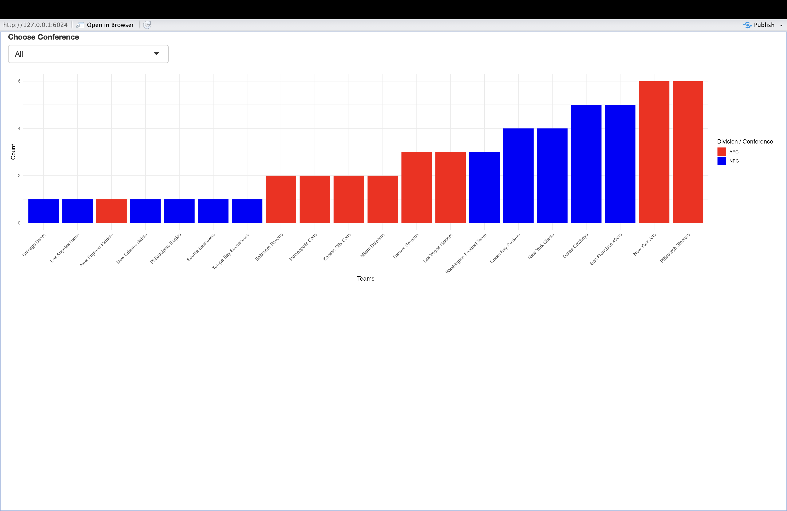
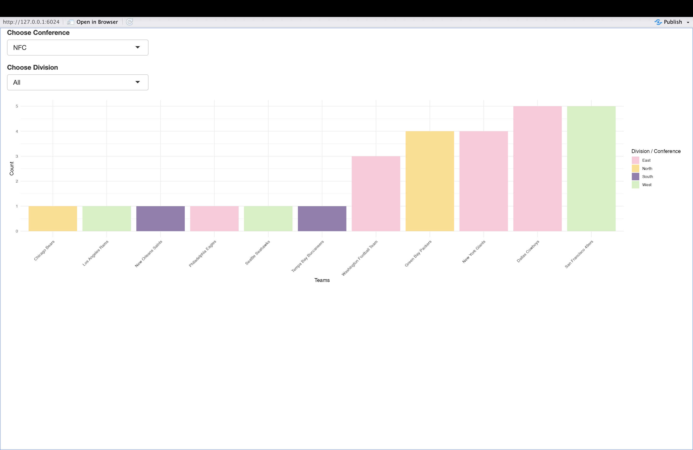
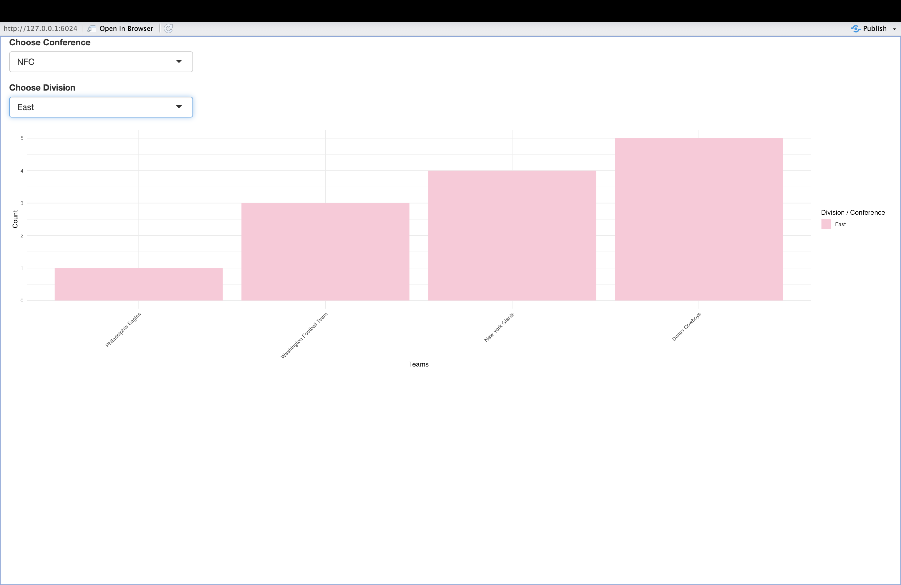

NFL Super Bowl Wins Redesign Project
Introduction to NFL Super Bowl Wins Redesign Project
Welcome to an explorative journey into the realm of the NFL, where we delve into the illustrious history of Super Bowl victories across teams, divisions, and conferences. This project springs from the core aim to reimagine how we visualize success in the league, blending class design guidelines with practical software applications.
In this exhibit, you’ll first encounter the original visualization, a narrative in numbers that maps out the wins each team has clinched. What follows is my reinterpretation, crafted to not only enhance clarity and insight but also to demonstrate the rich potential of thoughtful design in statistical storytelling.
This Redesign Project serves a tri-fold purpose:
- To apply classroom design principles using the analytical tools we’ve mastered.
- To showcase the evolution from initial data to final redesign, presenting an evolution in understanding.
- To contribute a chapter to my growing portfolio, marking a milestone in my analytical and creative endeavors.
Embrace the data, explore the transformations, and discover the stories that numbers whisper through their graphical representations.
Original Visualization: A Critical Review

Following the introductory overview of our NFL Super Bowl Wins Redesign Project, we turn our attention to the initial visualization that set the stage for this analytical revamp. While the original sunburst chart provides a colorful and immediate visual differentiation between conferences and divisions, its effectiveness as a tool for detailed analysis is hindered by several factors:
Complexity vs. Utility: The chart’s multi-tiered approach, although visually appealing, can obscure the clarity of data, with its intricate design overshadowing the conveyance of information.
Comparative Difficulty: The radial layout of a sunburst chart is not conducive to easy comparison across segments, leading to potential misinterpretation of the closely contested win counts among NFL teams.
Design Preferences: Adhering to the educational direction of our course, we acknowledge the limitations of pie charts, including their propensity to distort viewer perception due to angle and area size, an aspect our professor is particularly critical of.
In light of these insights, the redesign aims to transform how we interpret these victories, shifting from a purely aesthetic display to a more nuanced and insightful narrative. The subsequent sections will unveil the redesigned visualizations, crafted to align with academic rigor and the strategic storytelling of data visualization.
Redesigning NFL Super Bowl Wins Visualization

Clarity in Data Storytelling This visualization takes form as a dot plot, a choice made to strip back the complexity of traditional pie charts and sunburst diagrams. The dot plot excels in presenting discrete data points like our NFL teams’ wins, offering a direct, unobscured view into the successes of each franchise.
Engage with Each Victory Hover your mouse over the display, and watch as it becomes an interactive journey through NFL history. Each dot, a beacon of triumph, reveals not just the number of wins but also the division and conference of the team when selected, inviting an engaging exploration that is both informative and intuitive.
A Visualization That Speaks By choosing a dot plot, I’ve ensured that the data speaks for itself. Its advantage lies in its straightforwardness – clear, comparable, with the essence of the data uncompromised by over-decoration. It’s a reflection of a thoughtful approach, where the medium is chosen with the message in mind.
Interactive Exploration of NFL Team Success
In the pursuit of a more dynamic and intuitive user experience, the second visualization leverages the power of interactive design to put the data directly into your hands. Here, we have transformed the static display into a versatile bar graph, initially set to encompass all NFL teams’ Super Bowl wins across both conferences.

Personalized Insights Dive deeper and tailor the view to your interests. With just a click, filter the visualization to display the triumphs of the teams within the AFC or NFC exclusively. But why stop there? A further click allows you to drill down into the divisions, unveiling the specific contributions each team has made to their division’s success.



Your Data, Your Story This interactive bar chart does more than just report wins; it invites you to explore and interact with history. The conditional panels respond to your curiosity, offering a personalized narrative of NFL achievements that evolves as you refine your focus. Discover the detailed stories behind each conference’s legacy and how divisions shape up against each other in the competitive landscape of football glory.
Concluding Thoughts on the NFL Super Bowl Wins Redesign Project
As we reach the end of our visual and analytical excursion, the transformations presented here showcase the power of reimagined data visualization. From the initial scatter plot to the nuanced, interactive bar graphs, this journey has been one of clarity and engagement. These redesigns serve not just as a testament to the potential within data but also as an homage to the art of simplifying complexity. They align with the critical academic standards and practical applications discussed in class, all while enriching my portfolio with designs that speak volumes beyond the datasets they represent.
As you’ve navigated through these visual narratives, it is my hope that you’ve gained insights into the strategic nuances of visualization and the stories data can tell when harnessed with intention and skill. Whether you’re a seasoned data analyst or a curious onlooker, the redesigns invite you to appreciate the subtleties within the numbers and, perhaps, inspire you to embark on your own projects of data-driven discovery.
References
McCann, Adam E. “Super Bowl Winners.” Tableau Public, Tableau Software, 2020, https://public.tableau.com/app/profile/adam.e.mccann/viz/SuperBowlWinners_16077204678580/SuperBowlWinners?_gl=11nvidia_gaMTAwMjY4OTY4My4xNzA5ODQ5MDQ1_ga_8YLN0SNXVS*MTcwOTg0OTA0My4xLjEuMTcwOTg0OTIwOS4wLjAuMA.